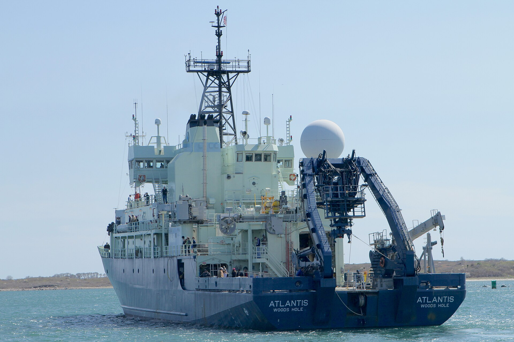
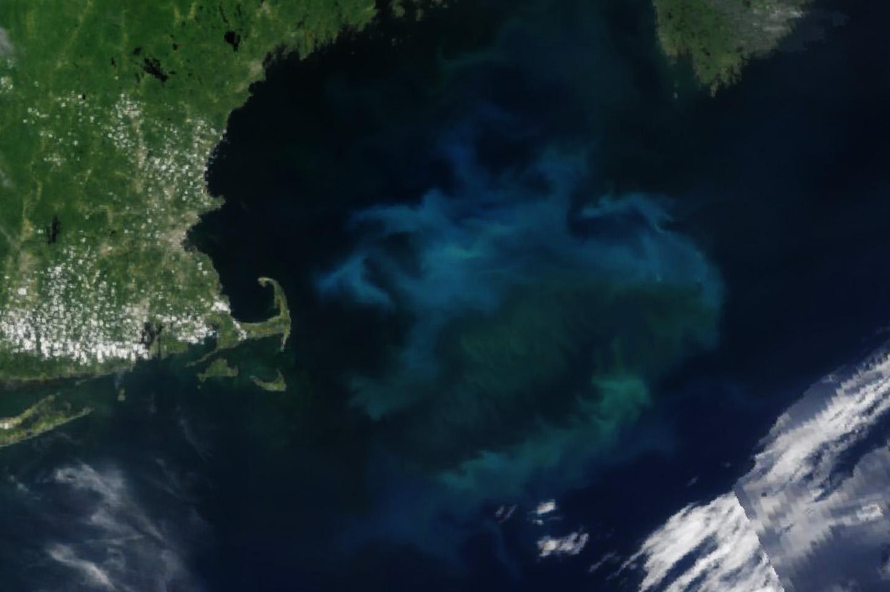
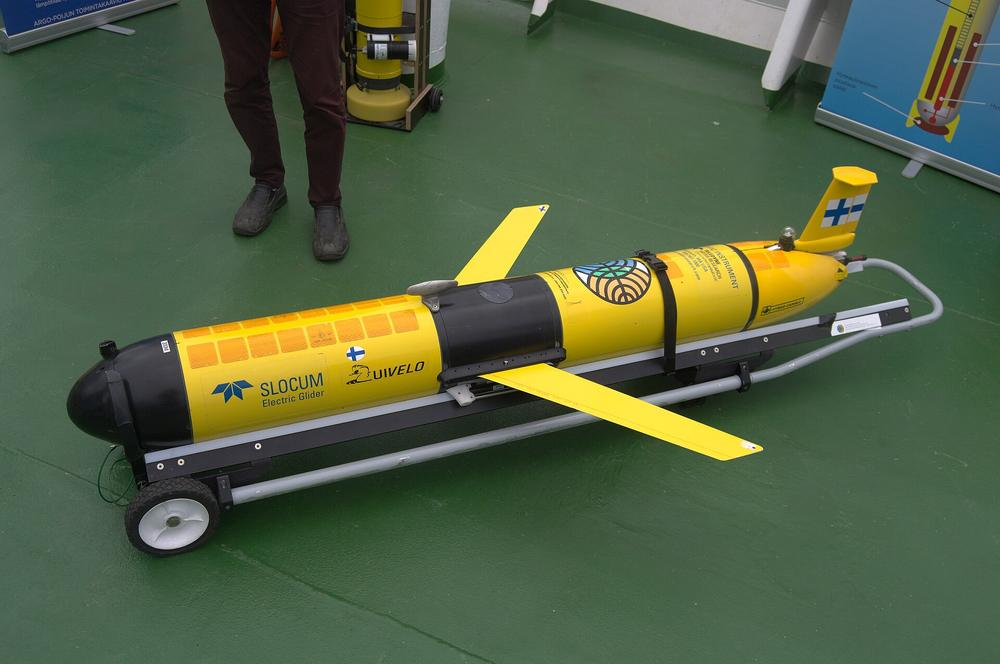
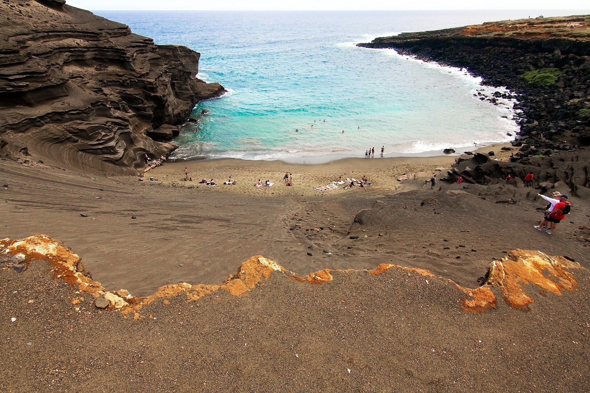
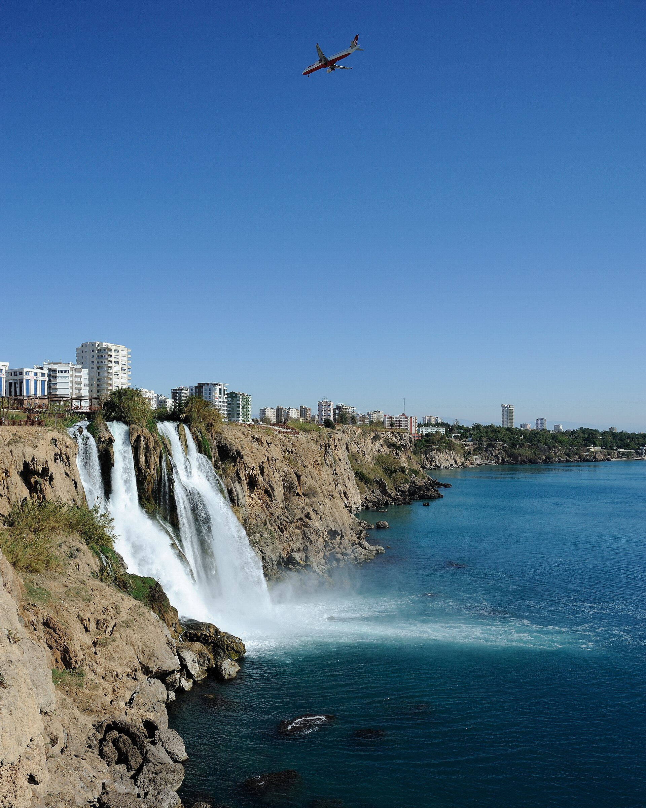

Kann das Meer mehr CO2 speichern?
Im Stillen hat der Ozean 29 % des CO2 aufgenommen, das wir ausstoßen. Seit 2016 steigt diese Aufnahme nicht mehr.
Mit zusätzlicher Alkalinität könnte die Oberfläche mehr aufnehmen. Feldversuche haben begonnen, einer wurde mit rosa Farbstoff durch offenes Wasser verfolgt.
Der Kohlenstoff kann 10.000 Jahre oder länger als Hydrogenkarbonat gelöst bleiben. Ob das funktioniert und in großem Maßstab sicher ist, muss Forschung klären, die die COP31 finanzieren kann.Ob das funktioniert und in großem Maßstab sicher ist, muss Forschung klären, die Regierungen noch immer finanzieren können.
Im August 2025 gaben Forschende von einem Forschungsschiff

Alkalinität und rosa Farbstoff in den Golf von Maine
und verfolgten den Fleck fünf Tage lang mit Gleitern
. Ein kleiner Versuch: bisher keine signifikante Veränderung bei Plankton oder Larven.3Die Ozeansenke stagniert
Der Ozean nimmt fast ein Drittel des CO2 auf, das wir ausstoßen, ohne dass ihn jemand darum gebeten hätte. Diese Aufnahme stagniert seit 2016, was das Global Carbon Budget größtenteils auf Klimavariabilität zurückführt.1 Die Alkalinitätserhöhung des Ozeans, kurz OAE, stellt eine praktische Frage: Können wir sicher erhöhen, was das Meer speichern kann? Theoretisch könnte die Antwort eine Milliarde Tonnen CO2 pro Jahr übersteigen, so die Schätzung von Project Drawdown, das die Wirksamkeit zugleich als ungewiss bezeichnet.19 In der Praxis sind die bisherigen Versuche winzig, und die Entnahme lässt sich noch schwer verifizieren.
29Prozent des CO2, das Menschen im vergangenen Jahrzehnt ausgestoßen haben, hat der Ozean aufgenommen1
3,4Milliarden Tonnen Kohlenstoff wurden 2024 aufgenommen, ein Wert, der seit 2016 nicht mehr steigt1
30Prozent saurer ist das Oberflächenwasser seit Beginn der Industrialisierung: der Preis, den das Meer für diese Aufnahme zahlt9
10.000Jahre oder länger kann Kohlenstoff als Hydrogenkarbonat gelöst bleiben, sofern die zugesetzte Alkalinität bestehen bleibt24

Zugeben
Dem Oberflächenwasser Alkalinität zugeben. Sie kann aus gemahlenen Mineralen wie Olivin stammen oder aus einer Hydroxidlösung, die mit Strom hergestellt wird.
Im Bild: natürlicher Olivinsand in Papakōlea, Hawaii, der ins Meer verwittert.
Entziehen
Theoretisch hält das behandelte Wasser seinen Kohlenstoff als Hydrogenkarbonat, sodass die Oberfläche der Luft über Wochen bis Monate mehr CO2 entzieht. Wie viel sie im offenen Wasser entzieht, wird noch gemessen.
Im Bild: der Golf von Maine aus dem All, Juni 2025, zwei Monate vor dem dortigen Versuch. NASA.
Messen
Schiffe, Gleiter, Driftbojen und Satelliten verfolgen, wohin die Alkalinität gelangt und wie viel Kohlenstoff ihr folgt. Das ist der schwierige Teil, und der Teil, der finanziert werden muss.
Im Bild: die R/V Atlantis der Woods Hole Oceanographic Institution, 2016.
Zwei Wege zu mehr Alkalinität
CO2 + H2O ⇌ H+ + HCO3−
Alkalinität entfernt die rosa dargestellten Wasserstoffionen. Das Gleichgewicht verschiebt sich nach rechts, und dasselbe Wasser kann mehr Kohlenstoff als stabiles Hydrogenkarbonat speichern.2
Die Chemie allein kann nicht zeigen, dass einer der beiden Wege funktioniert. Abbau, Mahlen, Transport und Strom verursachen CO2-Emissionen, daher zeigt erst der gesamte Lebenszyklus, ob ein Verfahren mehr entnimmt, als es freisetzt. Deshalb braucht es mehr Forschung, und deshalb muss sie unabhängig von den Unternehmen bleiben, die einen der beiden Wege verkaufen.2
Mineralisch
- Methode
- Alkalisches Gestein wie Olivin, Basalt oder Kalkstein mahlen und in Küstengewässern oder auf offener See ausbringen.
- Stärke
- Der Weg ahmt, nur weit schneller, die natürliche Verwitterung nach, die die Chemie des Ozeans seit Jahrmillionen reguliert.
Elektrochemisch
- Methode
- Meerwasser oder Sole aufspalten: in einen alkalischen Teilstrom, der ins Meer zurückfließt, und einen sauren, der an Land behandelt wird.
- Stärke
- Bereits gelöst und genau dosiert. Konzepte, die die Entnahme vor Ort abschließen, sind möglicherweise einfacher zu überwachen als offenes Wasser.13 Im Versuch im Golf von Maine wurde gereinigtes Natriumhydroxid verwendet.3
- Offene Fragen
- Hoher Energiebedarf, bei dem fossiler Strom einen Großteil des Nutzens zunichtemachen könnte. Sichere Verwendung oder Entsorgung der Säure, Schäden für Meereslebewesen an den Entnahmestellen für Meerwasser und abgebautes Gestein bei manchen Konzepten.13
Wie lange der Kohlenstoff bleibt
Typische Speicherdauern aus der Fachliteratur. Jeder Schritt nach rechts bedeutet das Zehnfache. Als Hydrogenkarbonat gebundener Kohlenstoff liegt nahe am oberen Ende der Skala.24
Dauerhaft heißt nicht verifiziert. Nachzuweisen, dass eine bestimmte Tonne entnommen wurde, bleibt das zentrale Forschungsproblem. Die Dauerhaftigkeit ist zudem an eine Bedingung geknüpft: Gelangt an einer Stelle zu viel Alkalinität ins Wasser, können sich Karbonatminerale bilden, was einen Teil des Gewinns zunichtemacht.5
Feldversuche in aller Offenheit
Im Versuch im Golf von Maine untersuchte das Team Bakterien, Phytoplankton, absterbende Zellen, Photosyntheseleistung, Chlorophyll, Zooplankton, Fischlarven und Hummerlarven. Nirgends zeigte sich ein signifikanter Unterschied. Fische, Wale und die Fischerei wurden nicht untersucht.3
Ein Laborergebnis unter den Erwartungen
In künstlichem Meerwasser gelöster Olivin entnimmt nur etwa ein Fünftel des Kohlenstoffs, den die Theorie vorhersagt, so eine Studie des Forschungszentrums GEOMAR.20
Gemeinsame Regeln für die Forschung
Ein internationales Team veröffentlicht einen Leitfaden für bewährte Verfahren in der OAE-Forschung, von Labortests bis zur Überwachung im Feld.5
Erste Versuche in kanadischen Gewässern
Die Dalhousie University und Planetary Technologies testen bei Halifax die Zugabe von Alkalinität, unterstützt von der Carbon to Sea Initiative.12
Vorarbeiten in Island
Eine Tracerstudie und ein Jahr unabhängiger Ausgangsmessungen bereiten einen Forschungsstandort im Hvalfjörður vor.12
Genehmigung nach öffentlicher Prüfung
Die US-Umweltschutzbehörde EPA genehmigt den Versuch nach zwei Kommentierungsfristen von zusammen 75 Tagen und mehr als 250 öffentlichen Stellungnahmen.3
Sechs Stunden im Wilkinson Basin
Das LOC-NESS-Team der Woods Hole Oceanographic Institution bringt gereinigtes Natriumhydroxid und den Farbstoff Rhodamin aus und verfolgt den Fleck dann mit autonomen Fahrzeugen, Gleitern, Driftbojen und Satelliten. Das Projekt wird zum Teil von der Carbon to Sea Initiative, ICONIQ Capital und der NOAA finanziert.315
Vertragsparteien verschärfen die Aufsicht
Die Vertragsparteien des Londoner Protokolls bringen Kriterien voran, nach denen OAE-Forschungsvorhaben gemäß dem Vorsorgeansatz bewertet werden.8
Vorläufige Ergebnisse, mit Vorbehalten
Vorgestellt auf dem Ocean Sciences Meeting in Glasgow. Eine begutachtete Fachveröffentlichung steht noch aus.3
Die COP31 beginnt in Antalya
Die Türkei ist Gastgeberin, Australien leitet die Verhandlungen.11
Wer bisher zahlt
Regierungen finanzieren diese Forschung, aber nur spärlich, und in den Vereinigten Staaten wurde dieses Geld 2025 gekürzt. Zugleich wirbt einer der wichtigsten Geldgeber auch für das Forschungsfeld, und Unternehmen kaufen bereits Entnahmen, die sich noch schwer verifizieren lassen. Deshalb gilt die Forderung öffentlichem Geld und unabhängiger Prüfung.
- Philanthropie
- Die Carbon to Sea Initiative startete 2023 mit 50 Millionen US-Dollar von einer Gruppe von Stiftungen, um OAE-Forschung zu finanzieren. Sie setzt sich auch für öffentliche Förderung und klarere Genehmigungsverfahren ein und ist damit Geldgeberin und Fürsprecherin zugleich.1621
- Zertifikatskäufer
- 2025 vereinbarten Käufer, darunter Stripe, Google und Shopify, einem OAE-Unternehmen 31,3 Millionen US-Dollar für 115.211 Tonnen Entnahme zwischen 2026 und 2030 zu zahlen. Damit wird künftige Entnahme gekauft. Eine Forschungsförderung ist das nicht.17
- Öffentliches Geld
- Vorhanden, aber knapp. Die US-Bundesmittel für die Forschung zu allen Verfahren der Kohlendioxid-Entnahme im Ozean beliefen sich 2023 und 2024 zusammen auf knapp 61,5 Millionen US-Dollar, so die Zählung von Carbon to Sea.21 Danach wurde die Meeresforschung des Bundes gekürzt, und bis August 2026 war diese Unterstützung „fast versiegt“, wie ein Bericht des Pulitzer Center feststellte.22 Der Kongress hat für 2026 10 Millionen US-Dollar vorgesehen.23 Die National Academies beziffern den Forschungsbedarf allein für OAE auf 125 bis 200 Millionen US-Dollar.2 Der Versuch im Golf von Maine wurde teils von zwei privaten Geldgebern, teils von einer Bundesbehörde finanziert.15
Die Risiken, klar benannt
Verifizierung
Nachzuweisen, dass eine bestimmte Tonne entnommen wurde, und sie von den natürlichen Schwankungen des Meeres zu unterscheiden, ist nach wie vor das schwierigste offene Problem der OAE.510
Die Forschungsgruppe CarbonPlan bewertet das Vertrauen in die Verifizierung des elektrochemischen Wegs mit 3 von 5.18
Ökologie
Lokale pH-Spitzen, Spurenmetalle aus Mineralen, Partikel und Verschiebungen im Plankton. Effekte im Labor hängen von Dosis und Einwirkdauer ab.6
Governance
Wasser überschreitet Grenzen. Die Geoengineering-Änderung des Londoner Protokolls erfasst nur die Ozeandüngung und ist noch nicht in Kraft.7
Gerechtigkeit
Wer profitiert, wer das Risiko trägt und wer entscheidet. Küstengemeinden und indigene Gemeinschaften brauchen echte Entscheidungsmacht über Versuche in ihrer Nähe.6 Bedenken in der Öffentlichkeit haben bereits zur Absage eines Pilotprojekts geführt.19
Fehlanreiz
Weniger Druck, Emissionen zu senken. Sichtbare Investitionen in die Entnahme könnten die Argumente für Emissionssenkungen schwächen. Jedes Regelwerk muss sich dem direkt stellen.2

Fünf Forderungen an Ihre Delegation
Ein eigener Arbeitsstrang für OAE-Forschung, öffentlich finanziert, mit Leitplanken, die feststehen, bevor jemand hochskaliert oder Zertifikate verkauft.
- Unabhängige Forschung zur Verifizierung finanzieren. Ein offener, weltweiter Standard für Überwachung, Berichterstattung und Verifizierung, öffentlich finanziert und unabhängig geprüft. Er erfasst den gesamten Lebenszyklus, von Abbau und Transport bis zum Strom, und jeden Kohlenstoff, der wieder entweicht. Geldgeber und Interessenkonflikte werden offengelegt, und jedes Ergebnis wird veröffentlicht. Bis dahin zählt kein Zertifikat und keine Netto-Null-Aussage für ein Klimaziel.5
- Ökologische Leitplanken setzen. Schwellenwerte für pH-Wert, Spurenmetalle und biologische Vielfalt, die einen Versuch automatisch unterbrechen, mit unabhängiger Aufsicht.6
- Governance klären. Zuständigkeit, Haftung und Zustimmung bei Versuchen im Meer nach dem UN-Seerechtsübereinkommen (UNCLOS) und dem Londoner Protokoll sowie ein öffentliches Register aller Versuche.78
- Entscheidungen und Nutzen teilen. Küstengemeinden und indigene Gemeinschaften haben echte Entscheidungsmacht darüber, wo und wie Versuche stattfinden.6
- Emissionssenkungen den Vorrang lassen. Klar festhalten, dass OAE die rasche Dekarbonisierung ergänzt und sie niemals ersetzen kann.2
Im Bild: der Untere Düden-Wasserfall, wo bei Antalya, der Gastgeberstadt der COP31, ein Fluss ins Meer mündet.
Ein Brief an Ihre Delegation
Tragen Sie Ihre Angaben ein, und der Brief füllt sich von selbst aus. Wählen Sie Ihr Land, um zu sehen, wohin Sie ihn senden.
Hier erscheint die Klima-Anlaufstelle Ihres Landes.
Senden Sie ihn an
Das UN-Verzeichnis nennt für dieses Land keine E-Mail-Adresse. Im Verzeichnis nachschlagen.
Kontakte, wie sie das UN-Klimasekretariat am 11. November 2026 aufführte. Sie ändern sich; bitte prüfen Sie sie im Verzeichnis, bevor Sie den Brief senden.
Persönlich auf der COP31? Laden Sie das einseitige Kurzpapier herunter (PDF), zum Ausdrucken oder Überreichen.
Diese Seite speichert nichts und sendet nichts. Die E-Mail öffnet sich in Ihrem eigenen E-Mail-Programm.
Sehr geehrte Mitglieder unserer Delegation bei der COP31,Sehr geehrte Mitglieder unserer Delegation,
im vergangenen Jahrzehnt hat der Ozean rund 29 % des von Menschen ausgestoßenen Kohlendioxids aufgenommen. Seit 2016 stagniert diese Aufnahme, was das Global Carbon Budget größtenteils auf Klimavariabilität zurückführt. Wir stützen uns auf eine Senke, die nicht mehr Schritt hält.
Die Alkalinitätserhöhung des Ozeans (OAE) könnte es dem Meer ermöglichen, sicher mehr aufzunehmen und den Kohlenstoff 10.000 Jahre oder länger als gelöstes Hydrogenkarbonat zu speichern. Die Belege stehen noch am Anfang. 2025 wurde im ersten von der US-Umweltschutzbehörde genehmigten Feldversuch Alkalinität in den Golf von Maine eingebracht. Vorläufige Ergebnisse zeigten keine signifikante Veränderung bei dem Plankton, den Fischlarven und den Hummerlarven, die untersucht wurden. Dasselbe Team erklärt, dass die Auswirkungen auf die Fischerei noch ungewiss sind und dass der Nachweis, wie viel Kohlenstoff entnommen wurde, weitere Arbeit erfordert.
Deshalb muss öffentliche Forschung vor jeder kommerziellen Nutzung stehen. Ich bitte Sie, sich für ein COP31-Ergebnis mit folgenden Zielen einzusetzen:Ich bitte Sie, sich für nationale Förderung und internationales Handeln, auch auf der COP32, mit folgenden Zielen einzusetzen:
1. Offen veröffentlichte Forschung zu Überwachung, Berichterstattung und Verifizierung finanzieren, die den gesamten Lebenszyklus erfasst, mit offengelegten Geldgebern und einer Begutachtung durch Personen ohne kommerzielles Interesse an OAE.
2. Ökologische Schwellenwerte festlegen, die einen Versuch automatisch unterbrechen.
3. Zuständigkeit, Haftung und Zustimmung nach dem Seerechtsübereinkommen der Vereinten Nationen und dem Londoner Protokoll klären und jeden Versuch in einem öffentlichen Register führen.
4. Küstengemeinden und indigenen Gemeinschaften echte Entscheidungsmacht über Versuche in ihrer Nähe geben.
5. Klar festhalten, dass OAE Emissionssenkungen ergänzt und niemals ersetzt, und OAE aus Kohlenstoffzertifikaten und Netto-Null-Aussagen heraushalten, bis die Entnahme unabhängig verifiziert ist.
Nichts davon verpflichtet irgendjemanden zum Einsatz. Es verpflichtet uns, in aller Offenheit Klarheit zu gewinnen, bevor der Markt an unserer Stelle entscheidet.
Mit freundlichen Grüßen
[Ihr Name]
[Ihre Funktion und Organisation]
Fragen von Delegierten
Ist das Geoengineering?
Es handelt sich um marine Kohlendioxid-Entnahme, die die Chemie des Meerwassers gezielt verändert; Vertragsgremien behandeln sie daher als marines Geoengineering. Die Vertragsparteien des Londoner Protokolls führen sie unter vier Techniken, die vorrangig bewertet werden sollen.7
Wird das von Ölkonzernen finanziert?
Nicht, soweit wir feststellen können. Die namentlich genannten Geldgeber der Carbon to Sea Initiative sind Stiftungen, und die bekannt gegebenen Zertifikatskäufer sind Technologie- und verbrauchernahe Unternehmen. Das Greenwashing-Risiko liegt woanders: bei Zertifikaten, die verkauft werden, bevor sich die Entnahme verifizieren lässt, oder die als Ersatz für Emissionssenkungen gekauft werden.1617
Ist das einsatzreif?
Nein. Project Drawdown führt OAE unter „Keep Watching“ (weiter beobachten). Es stuft die Belege als begrenzt ein und erklärt, der Ansatz sei nicht einsatzreif und funktioniere noch nicht verlässlich.19 Laborstudien haben ergeben, dass manche Minerale die Alkalinität weniger erhöhen als erwartet, und die bisherigen Feldversuche sind klein.20
Warum die COP31?Warum jetzt, nach der COP31?
Die COP31 findet vom 9. bis 20. November 2026 in Antalya statt, Australien leitet die Verhandlungen. Unternehmen verkaufen bereits Zertifikate für OAE-Entnahmen, deshalb muss öffentlich finanzierte Forschung die Standards setzen, bevor der Markt es tut.Die COP31 ging am 20. November 2026 in Antalya zu Ende. Unternehmen verkaufen bereits Zertifikate für OAE-Entnahmen, deshalb muss öffentlich finanzierte Forschung weiterhin die Standards setzen, bevor der Markt es tut, über nationale Haushalte und auf der COP32.11
Sind Feldversuche erlaubt?
Maßgeblich sind nationale Genehmigungen. Der Versuch im Golf von Maine brauchte eine Genehmigung der EPA und 75 Tage öffentlicher Kommentierung. International erfasst die Änderung des Londoner Protokolls formal nur die Ozeandüngung und ist noch nicht in Kraft. 2025 brachten die Vertragsparteien Kriterien zur Bewertung von OAE-Forschung voran.38
Schadet das dem Leben im Meer?
Laborstudien zeigen Effekte, die von Konzentration und Einwirkdauer abhängen. Der Versuch im Golf von Maine ergab keine signifikanten Unterschiede bei Plankton oder Larven, untersuchte aber weder Fische noch Säugetiere noch die Fischerei. Bei mineralischen Wegen kommt das Risiko von Spurenmetallen hinzu. Deshalb gehören Leitplanken zur Forderung.36
Woher wüsste man, dass eine Tonne entnommen wurde?
Teams messen die Alkalinität, die sie zugeben,10 verfolgen pH-Wert und CO2-Druck im behandelten Wasser und schätzen mit Ozeanmodellen, wie viel CO2 in den folgenden Monaten durch die Oberfläche tritt. Eine glaubwürdige Angabe zieht außerdem die Emissionen aus Abbau, Mahlen, Transport und Strom ab sowie jeden Kohlenstoff, der wieder entweicht. Die natürliche Variabilität ist groß, deshalb wird öffentliches Forschungsgeld hier am dringendsten gebraucht.5
Könnte OAE für Greenwashing genutzt werden?
Ja, wenn sie als Ausgleich für Emissionen verkauft wird, die weiterlaufen, oder wenn Zertifikate und Netto-Null-Aussagen kommen, bevor die Entnahme verifiziert ist. Keine Tonne sollte doppelt gezählt werden. Die fünfte Forderung legt ausdrücklich fest, dass OAE zu den Emissionssenkungen hinzukommt, und Forschungsförderung sollte von Kompensationsaussagen getrennt bleiben, bis die Verifizierung gelöst ist.2
Wofür würde das Geld verwendet?
Offene Verifizierungsmethoden und gemeinsam genutzte Daten, unabhängig überwachte Feldversuche, ökologische Langzeitstudien und Governance-Pilotprojekte unter Leitung von Küstengemeinden.5
Was würde es kosten?
Das weiß noch niemand. Project Drawdown1913 stellt fest, dass die Schätzungen für OAE weit auseinandergehen, aber in der Regel über 100 US-Dollar pro Tonne CO2 liegen und dass viele elektrochemische Konzepte deutlich über 500 US-Dollar liegen. Forschung muss zeigen, was eine verifizierte Tonne wirklich kostet, bevor jemand eine verkauft.
Quellen
- Friedlingstein et al., Global Carbon Budget 2025, Earth System Science Data, 2026.
- National Academies, A Research Strategy for Ocean based Carbon Dioxide Removal and Sequestration, 2022.
- Woods Hole Oceanographic Institution, Preliminary results from the first EPA permitted OAE field trial, 25 February 2026.
- Hartmann et al., Stability of alkalinity in ocean alkalinity enhancement approaches, Biogeosciences, 2023.
- Oschlies et al., Guide to Best Practices in Ocean Alkalinity Enhancement Research, State of the Planet, 2023.
- UK Environment Agency, Ocean alkalinity enhancement: evidence on potential environmental impacts and social implications, 2025.
- International Maritime Organization, Marine geoengineering.
- Center for International Environmental Law, Global treaty advances precautionary regime on marine geoengineering, 2025.
- NOAA, Ocean acidification.
- High frequency in situ total alkalinity measurement for monitoring OAE field trials, Communications Engineering, 2026.
- Clayton Utz, COP31 in Antalya: Australia takes the gavel, November 2026.
- Carbon to Sea Initiative, Field research. Halifax and Hvalfjörður sites.
- Project Drawdown, Deploy ocean electrochemistry, updated February 2026.
- Carbon to Sea Initiative, OAE Environmental Impact Monitoring Framework 1.0.0 and OAE Data Protocol 1.0.0.
- Woods Hole Oceanographic Institution, The LOC-NESS Project: funding. Project funders.
- MIT Technology Review, Meta’s former CTO has a new $50 million project: ocean based carbon removal, June 2023.
- Frontier, Frontier buyers sign $31M deal with Planetary to advance ocean alkalinity enhancement, 2025.
- CarbonPlan, CDR Verification Framework: ocean alkalinity enhancement, electrochemical.
- Project Drawdown, Deploy ocean alkalinity enhancement, updated November 2026.
- MIT Technology Review, Why using the oceans to suck up CO2 might not be as easy as hoped, 2022. Reports a GEOMAR study in Frontiers in Climate.
- Carbon to Sea Initiative, Policy. Its policy priorities and its count of US federal funding.
- Pulitzer Center, Lobsters and acidic seas, 20 August 2026. US funding cuts and European grants.
- Carbon180, Carbon removal prevails in the final FY26 appropriations package, January 2026.
Carbon to Sea finanziert OAE-Forschung und setzt sich für sie ein. Die Organisation wird hier für ihre eigenen Programme und Werkzeuge und für ihre Zählung der US-Bundesmittel zitiert. Ihr Eintreten ist kein unabhängiger Beleg dafür, dass OAE funktioniert. Bilder, alle über Wikimedia Commons: Algenblüte im Golf von Maine, NASA Earth Observatory, Wanmei Liang, gemeinfrei. R/V Atlantis, NASA, Michael Starobin, gemeinfrei. Slocum-Gleiter, Antti Leppänen, CC BY 4.0. Strand von Papakōlea, Pushkr, CC BY 2.0. Unterer Düden-Wasserfall, Saffron Blaze, CC BY 3.0. Die Animation im Seitenkopf ist eine Illustration und nicht maßstabsgetreu.